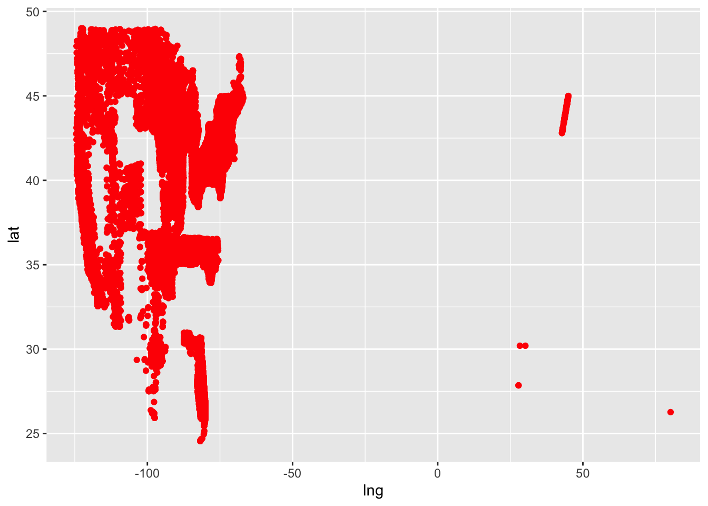

Portfolio 6
Setup
I found another Tidy Tuesday dataset about measles vaccinations rates for schools around the country between 2017 and 2019, and I want to see what patterns jump out in the data. Let’s load the data and the packages we’ll need here:
library(tidyverse)
library(tidytuesdayR)
# Get data
tuesdata <- tidytuesdayR::tt_load('2020-02-25')##
## Downloading file 1 of 1: `measles.csv`measles <- tuesdata$measlesMap
First, let’s see what geographic area we’re working with in this dataset. Longitude and latitude are included for each school’s entry in the data, so we can just plot these against each other:
measles %>%
ggplot(aes(y = lat, x = lng)) +
geom_point(color = "red")## Warning: Removed 1549 rows containing missing values (`geom_point()`).
Let’s see if the image makes a little more sense if I filter out schools with a longitude greater than zero:
measles %>%
filter(lng < 0) %>%
ggplot(aes(y = lat, x = lng)) +
geom_point(color = "red")So we’re missing data grom some states, but it looks like we’ve got a decent portion of the US covered. Just out of curiosity, let’s see where the schools we just filtered out are actually located:
measles_clean <- measles %>%
filter(lng < 0)
measles_clean## # A tibble: 64,476 × 16
## index state year name type city county district enroll mmr overall
## <dbl> <chr> <chr> <chr> <chr> <chr> <chr> <lgl> <dbl> <dbl> <dbl>
## 1 1 Arizona 2018-19 A J M… Publ… Noga… Santa… NA 51 100 -1
## 2 2 Arizona 2018-19 Acade… Char… Tucs… Pima NA 22 100 -1
## 3 3 Arizona 2018-19 Acade… Char… Tucs… Pima NA 85 100 -1
## 4 4 Arizona 2018-19 Acade… Char… Phoe… Maric… NA 60 100 -1
## 5 5 Arizona 2018-19 Accla… Char… Phoe… Maric… NA 43 100 -1
## 6 6 Arizona 2018-19 Alfre… Publ… Phoe… Maric… NA 36 100 -1
## 7 7 Arizona 2018-19 All A… Char… Phoe… Maric… NA 24 100 -1
## 8 8 Arizona 2018-19 Ameri… Char… Yuma Yuma NA 22 100 -1
## 9 9 Arizona 2018-19 Arizo… Priv… Phoe… Maric… NA 26 100 -1
## 10 10 Arizona 2018-19 Arizo… Publ… San … Yuma NA 78 100 -1
## # ℹ 64,466 more rows
## # ℹ 5 more variables: xrel <lgl>, xmed <dbl>, xper <dbl>, lat <dbl>, lng <dbl>Apparently most of these schools are supposed to be in Vermont, but the points don’t fall into the continental United States when I plot them. We’re going to work with the filtered dataset moving forward, just because I don’t totally trust these data points to be accurate.
Merging with Political Data
A good first step towards figuring out what’s actually going on with vaccinations here would be just to make a histogram of vaccination rates, both overall and for measles specifically:
#Overall vaccination rate
measles %>%
filter(overall != -1) %>%
ggplot(aes(x = overall)) +
geom_histogram(binwidth = 5, color = "black", fill = "blue")#Measles vaccination rate
measles %>%
filter(mmr != -1) %>%
ggplot(aes(x = mmr)) +
geom_histogram(binwidth = 5, color = "black", fill = "blue")
So it looks like the distributions of MMR vaccination and overall vaccination aren’t shaped very differently (both are pretty substantially) positively skewed, but MMR vaccination appears to be more common than overall vaccination. This makes sense – the MMR vaccine is just one shot, but overall vaccination requires consistently sticking to a vaccine schedule.
Now here’s what I’m curious about: does a state’s political affiliation influence the rates at which people in that state get vaccinated? These data were collected before COVID, so it would be interesting to see how closely vaccination rates and politics related in the pre-COVID era.
To do this though, we first need info on the political affiliation of each state. Luckily, I was able to find a dataset from MIT giving detailed information about elections for each state since 1976. Let’s load that in below:
states <- read_csv("/Users/lawilson1999/Desktop/Data Science Spring 2023/Portfolio/p06/1976-2020-president.csv")Each entry in the dataset represents the performance of a given candidate in a given state for each presidential election since 1976. That means we’re going to have to do some pretty serious processing for this to be useful to us. That includes:
Filtering the results to the 2016 election, as that was the most recent election before the data was collected
Filtering out the candidates aside from those of the major party nominees. In this case, that means everyone except Hilary Clinton and Donald Trump
Figuring out for each state which of those two candidates received the most votes in each state, and retaining the party affiliation of that candidate
Let’s do that below:
# Filter for 2016 election and for major party candidates
states_2016 <- states %>%
filter(year == 2016) %>%
filter(candidate == "CLINTON, HILLARY" | candidate == "TRUMP, DONALD J.")
#Calculate which candidate won more votes
state_max_votes <- states_2016 %>%
group_by(state) %>%
summarize(max(candidatevotes))
names(state_max_votes)[2] <- "maxvotes"
state_winners <- merge(states_2016, state_max_votes, by = "state")
#Filter out the losing candidate in each state
state_winners <- state_winners %>%
filter(candidatevotes == maxvotes)
#Save states and party affiliations as a standalone data frame
state_parties <- state_winners %>%
select(state, party_simplified) %>%
mutate(state = str_to_title(state))
head(state_parties)## state party_simplified
## 1 Alabama REPUBLICAN
## 2 Alaska REPUBLICAN
## 3 Arizona REPUBLICAN
## 4 Arkansas REPUBLICAN
## 5 California DEMOCRAT
## 6 Colorado DEMOCRATLooks like it worked! Now that we have out list of states and political affiliations, we can merge it with the measles data:
measles_politics <- merge(measles_clean, state_parties, by = "state")Vaccinations by Political Affiliation
Now that we have the data formatted the way we want, we can take a look at what’s going on. Let’s visualize differences in vaccinations for red and blue states:
# Overall vaccination
measles_politics %>%
filter(overall != -1) %>%
ggplot(aes(x = overall, fill = party_simplified)) +
geom_density(alpha = 0.5) +
scale_fill_manual(values = c("blue", "red")) +
facet_wrap(~party_simplified)
# MMR vaccination specifically
measles_politics %>%
filter(mmr != -1) %>%
ggplot(aes(x = mmr, fill = party_simplified)) +
geom_density(alpha = 0.5) +
scale_fill_manual(values = c("blue", "red")) +
facet_wrap(~party_simplified)For both red and blue states, it looks like there’s still heavy positive skew in both overall and MMR vaccination rates, suggesting that people are generally likely to vaccinate their children regardless of political affiliation. However, it also seems like parents in blue states are fairly substantially more likely to fully vaccinate their kids than parents in red states.
Just to confirm this intuition, let’s compare red and blue states vaccination rates inferentially with t-tests:
# filter out vaccination values of -1
measles_politics_filt_overall <- measles_politics %>%
filter(overall != -1)
measles_politics_filt_mmr <- measles_politics %>%
filter(mmr != -1)
# Overall vaccination
t.test(overall ~ party_simplified, measles_politics_filt_overall, alternative = "two.sided")##
## Welch Two Sample t-test
##
## data: overall by party_simplified
## t = 19.109, df = 33331, p-value < 2.2e-16
## alternative hypothesis: true difference in means between group DEMOCRAT and group REPUBLICAN is not equal to 0
## 95 percent confidence interval:
## 1.727684 2.122615
## sample estimates:
## mean in group DEMOCRAT mean in group REPUBLICAN
## 93.44583 91.52068# MMR vaccination
t.test(mmr ~ party_simplified, measles_politics_filt_mmr, alternative = "two.sided")##
## Welch Two Sample t-test
##
## data: mmr by party_simplified
## t = 26.979, df = 13300, p-value < 2.2e-16
## alternative hypothesis: true difference in means between group DEMOCRAT and group REPUBLICAN is not equal to 0
## 95 percent confidence interval:
## 2.674026 3.093029
## sample estimates:
## mean in group DEMOCRAT mean in group REPUBLICAN
## 95.72637 92.84284So again, based on this it seems like even pre-COVID, vaccination rates in blue states were higher than those in red states.
I have some more questions about this data, but this project is already going long so I’m going to use my next one to dig into this data some more!